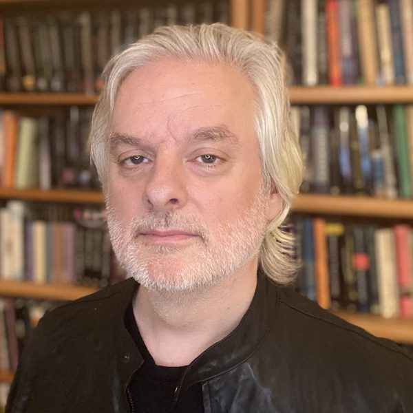
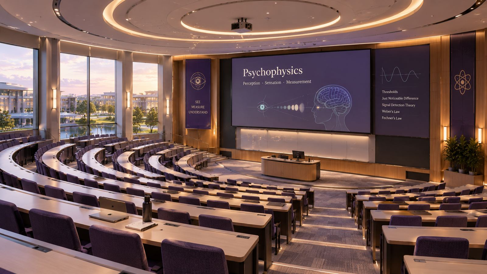
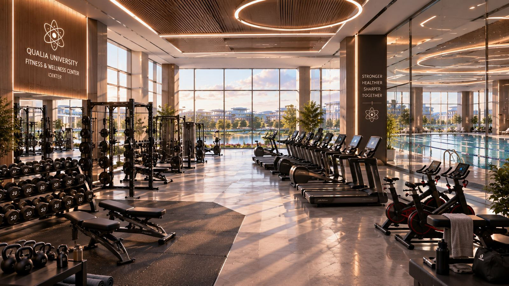
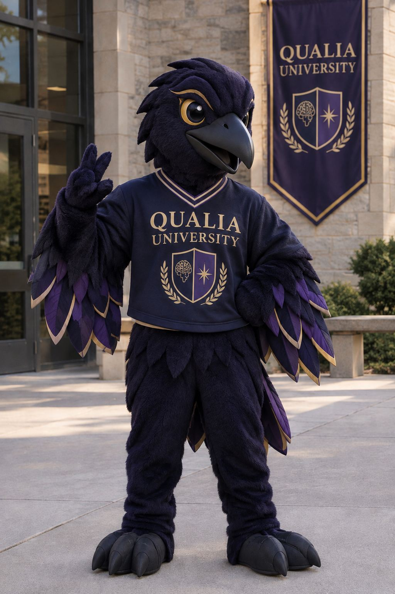

Where the mind meets the world.
Bridging the gap between mind and body.
Education is not only about what students know, but how they interpret and understand their knowledge.
At Qualia University, we believe that education must acknowledge both measurable physical attributes as well as the subjective experiences of every student. We recognize the importance of each student's consciousness, tailoring to their individual needs.
Qualia University knows that education is not only about what students know, but also about how they interpret and understand their knowledge. True education occurs when measurable knowledge and conscious understanding intertwine.
"Bridging the gap between mind and body."
New Dualism
Also known as property dualism: the view that the universe consists of two properties, physical processes and consciousness.
Explanation
- Consciousness is viewed as a fundamental property of the physical universe, just like mass, time, and other properties of the natural world.
- Unlike the Cartesian dualist view, which treats the mind and body as two distinct things, new dualism views them as intertwined at many levels. Thinking and consciousness cannot simply be reduced to physical systems; there must be a separate component for it to exist.
- Modern philosophers use concepts from neuroscience to connect the physical and conscious properties of human nature, and to answer how an immaterial mind can affect physical atoms.
- Psychophysical laws are laws of nature that dictate how consciousness can arise from physical configurations, explaining aspects of the "hard problems".
Criticisms
- It struggles to explain how consciousness can actually affect the body. If brain activity alone explains our actions, consciousness becomes a byproduct, so the feeling of pain would not be why someone pulls their hand off a hot stove.
- A non-physical mind affecting physical atoms would have to introduce new energy, going against the conservation of energy.
- Critics such as Tim Crane argue that if mental properties depend on the brain, the mind is not truly separate, making new dualism physicalism under a different name.
- Chalmers argues we can imagine "zombies", physically identical to us but with no conscious experience, so consciousness is beyond the physical. Critics reply that imagining something does not make it possible, just as we can imagine water not being H2O.
Explained by neuroscience
Behaviours such as memory, perception, and attention that science can study and explain.
Qualia
Subjective, personal experiences, like how each individual experiences colour, taste, or emotion, that science cannot explain.
Courses & Syllabus
A path that starts with the physical world and moves toward the mind, ending where the two meet.
Assessment Strategies
Used for measuring previous and prior knowledge or skills.
Students describe how they learn best and how they personally experience each subject so professors are able to tailor the lessons to all students as best as possible.
Ungraded conversations and learning journals where students reflect on what they have learned, what they understood, and how their thinking has changed. Used to identify gaps in knowledge and provide ungraded feedback.
Students show their knowledge in the format that fits them best (report, presentation, artwork, experiment, video), with a short reflection on their own interpretation submitted to the professor and TA. Used to evaluate academic performance throughout the course.
Students evaluate their own progress and set personal learning goals with their teachers and peers. For some assessments, students will randomly be assigned peers to work with and will provide feedback to each other.
Meet our Principal

David Chalmers
Principal, Qualia University
Professor of Philosophy and Neural Science, New York University
- 1966Born in Sydney, Australia. Spent his early years in Adelaide, studying mathematics at the University of Adelaide.
- Hitchhiking EuropeBecame fascinated by the idea of consciousness during a trip across Europe.
- 1989Moved to Indiana University, earning his PhD in philosophy and cognitive science, beginning The Conscious Mind, and working in Doug Hofstadter's Center for Research on Concepts and Cognition.
- CareerWorked at many universities, from Washington University in St. Louis to the Australian National University.
- 2014Took up his position at New York University full-time.
- PhilosophyAdvocates property dualism, rejecting Cartesian dualism and claiming that fundamental "psychophysical laws" bridge the gap between physical states and conscious experience.
- OrganizationsCo-founded the Association for the Scientific Study of Consciousness, co-directs the PhilPapers Foundation, and organized three Centers for Consciousness.
Our Staff
Tap a name to read their biography.
Explore the Grounds
Lecture halls, a fitness centre, open green spaces, and a central common building connecting it all.


Fly over Qualia University
Take a drone tour of our campus: five academic buildings, a common building with dining hall and study areas, a library, athletic fields, the Centre of Physical Studies, the Conscious Centre, and the Bridge that connects them.
Extracurricular Activities
Sports
Football, basketball, soccer, tennis, swimming and more.
The Perception Gallery
Student-made artwork representing how they perceive subjective experiences.
VR Club
Experience different qualia.
Meditation & Yoga
Time to connect body and mind.

The Qualia Ravens
Clever, observant, and mysterious.
Inspired by Norse mythology, where ravens serve as a bridge between the mortal realm and the divine world. The god Odin has two ravens who travel through the realms to observe humanity and nature, relaying what they see back to him.
Together they represent the mind's ability to interpret information and reason. At Qualia University, the Raven symbolizes the bridge between the physical world and mysterious consciousness, and its intelligence represents how new dualist philosophers use neuroscience to attempt to explain the unexplainable.
Disciplinary Practices
Low
e.g. Disrupting classReflection essays, formal apologies, mandatory identity-building workshops.
Medium
e.g. Cheating on a test onceGrade of 0 on the test or assignment, redo with reduced grade, fail if major test or assignment, reflection essays.
High
e.g. Cheating multiple timesFail course, extra major assignment, temporary suspension, reflection essays.
Extreme
e.g. Illegal or harmful activitiesExpulsion, police involvement, counselling.